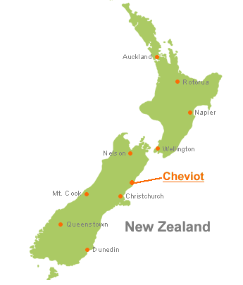

Travel and Accommodation
(Last updated June 2010)

Introducing New Zealand
New Zealand is a relatively small country with a population of roughly 4 million. Of these 1.3 million reside in the northern city of Auckland.
New Zealand consists of two main islands, appropriately and unimaginatively named the North Island and the South Island, and a third smaller Stewart Island off the bottom of the South Island. The New Zealand climate is dominated by the effects of the mountains and sea but, in general, is moderate.
Christchurch with a population of about 350,000 is the largest city in the South Island. It is known as the "garden city" because of the many parks, reserves, and private gardens. It is a flat city with a backdrop of the picturesque Port Hills rising to 500m. There are many magnificent walks in the Port Hills only ten minutes drive from the city center. To the east the city is bounded by the sandy beaches of the Pacific Ocean.
The venue for the World Rogaining Championships is at Cheviot, 120 km north of Christchurch.
Orientation
To get an idea of the layout of New Zealand and the locations of principal cities and towns have a look at the maps on the websites 100% Pure New Zealand, New Zealand Tourism Guide and, of course, Google maps.
Downloadable PDFs of maps are available on the first two sites.
Entering New Zealand
There are two main International airports in New Zealand – Auckland in the North Island and Christchurch in the South Island. It is of little consequence which you fly into. There are regular air service links between the two. However, if you wish to drive down from Auckland a ferry trip across Cook Strait is required. It may be better to rent a separate car in each Island.
The Tourism New Zealand website is a one-stop source of information for visitors to New Zealand. It has a vast amount of information on “Getting to and around New Zealand” including Passport and Visa requirements, Customs and Immigration, Travel and Destinations, and Accommodation.
For suggestions on what to see and where to go while in NZ see the section Activities and Tourism on this website.
Visas and Passports
All visitors to New Zealand must carry a passport that is valid for at least three months beyond the date you intend to leave the country.
You do not need a visa or permit to visit New Zealand if you are:
- An Australian citizen travelling on an Australian passport.
- An Australian resident with a current Australian resident return visa.
- If you are a citizen from: Andorra, Argentina, Austria, Bahrain, Belgium, Brazil, Brunei, Canada, Chile, Cyprus, Czech Republic, Denmark, Estonia, Finland, France, Germany, Greece, Hong Kong, Hungary, Iceland, Ireland, Israel, Italy, Japan, South Korea, Kuwait, Latvia, Liechtenstein, Lithuania, Luxembourg, Malaysia, Malta, Mexico, Monaco, Netherlands, Norway, Oman, Portugal, Qatar, San Marino, Saudi Arabia, Singapore, Slovak Republic, Slovenia, South Africa, Spain, Sweden, Switzerland, United Arab Emirates, United Kingdom, United States of America, Uruguay and Vatican City.
However, you are required to provide:
- Travel tickets or other evidence of onward travel arrangements
- Evidence that your can support yourself in New Zealand (approximately NZ$1000 per month per person).
All other nationalities will require a visa and information on this is available from the New Zealand Immigration website. A travel agent in your own country should be able to advise you and ease the paperwork required for a visa. Be sure to begin the visa process in good time in case there are unexpected delays. If required, we can provide an official letter of invitation to support your application; send an email to admin@wrc2010.org.nz the organisers.
Customs and Quarantine
On arrival in New Zealand you will have to pass through Customs, Immigration and Biosecurity. For what to expect and a list of restricted goods see the New Zealand Customs Service website.
New Zealand bio-security control is very strict. You must ensure that you do not bring soil, insects, seeds, plant diseases, or animal infections into the country. Camping gear and shoes will be closely inspected and it is likely that your tent will be fumigated. Be very particular about seeds lodged in gear and shoe lining. Items with attached seeds are likely to be quarantined for three or four days while they are decontaminated (for a fee). For complete information on what to expect with regard to bio-security as you enter New Zealand see the Biosecurity New Zealand website.
Insurance
You should ensure that you have comprehensive Travel Insurance, including a comprehensive medical component, covering your visit to New Zealand.
In New Zealand the Accident Compensation Corporation (ACC), provides comprehensive, no-fault personal injury cover for all New Zealand residents and visitors to New Zealand. Note that this cover is strictly for accidental injury and does not cover general medical conditions.
Accommodation in New Zealand
There is a wide range of accommodation available throughout New Zealand including:
- Motels, Motor Lodges and Serviced Apartments
- Hotels, Apartments and Luxury Lodges
- Backpackers & Hostels
- Bed & Breakfasts, Homestays & Cottages
- Holiday Parks & Campgrounds
- Holiday Homes & Baches
Some sources of information are Jasons Travel Guide, New Zealand Holiday Homes, BookaBach, New Zealand Travel, and New Zealand Tourism Guide.
Accommodation for the Rogaine
As noted in the Event Information tent camping is available at the event site.
There is a range of Motels, Hotels, Holiday homes, and Farmstay accommodation in the area. For the immediate vicinity, including Gore Bay, consult the Cheviot community website, Cheviot and Gore Bay Accommodation, or Holiday Homes.
An alternative option is to hire a Motorhome (Campervan). This has the additional advantage of fulfilling your transport needs. There are many providers within New Zealand and at least 29 providers with a few hundred vehicles in Christchurch. Start with the list available at Getting around New Zealand (100% Pure New Zealand). We suggest you should book your Motorhome in good time as they are a popular transport/accommodation combination for tourists in New Zealand.
Further afield, within 80km of Cheviot, settlements with abundant accommodation include Hanmer Springs and Kaikoura. The websites Jasons Travel Guide, Holiday Homes and BookaBach will reveal options for you.
Finally, it is feasible to travel to the venue from Christchurch the morning of the Rogaine but be wary of driving back to Christchurch after the Rogaine without a few hours sleep unless you have a driver who has not competed.
Travel within New Zealand
Start with the general outline on travelling in New Zealand. Options for car and motorhome rental, buses and coaches, rail, and ferry are all discussed with links to providers.
For rental cars there are many other operators besides the major international companies such as Avis, Budget, Hertz, and Thrifty operating within New Zealand. Just be aware that, while usually cheaper, cars supplied by these operators may not match the reliability standards of the major operators; we are not able to give particular advice.
Specific driving instructions to the event will be posted in the Event Information closer to the Rogaine.
Chartered Bus to the Rogaine
There will be chartered buses from Christchurch to the Rogaine on Friday afternoon and Saturday morning. Seats on the bus may be reserved at the Online Shop where details on departure times and fares are provided.
Activities and Tourism
We hope that you will take advantage of your visit to New Zealand to see some of the country while you are here. See the Activities and Tourism section of this website for suggestions.
Enquiries
If you have any queries about any of the above information first check out the Forum in case someone else has had the same query. If you cannot find the answer there then post your enquiry on the Forum or email the organisers.